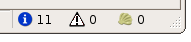
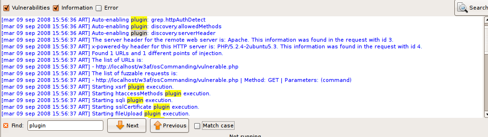
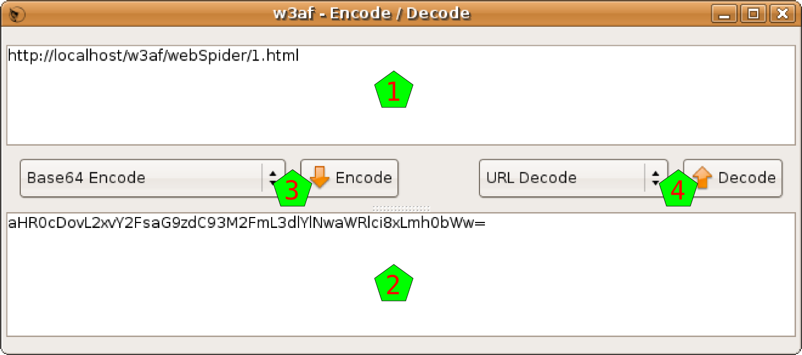
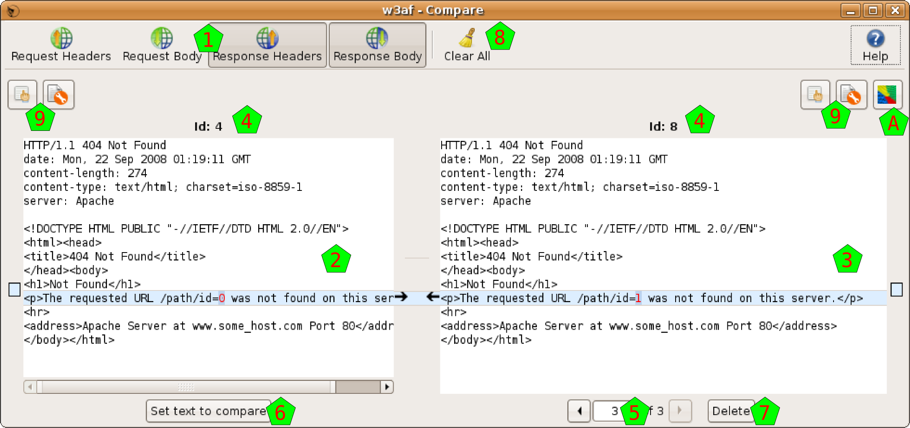
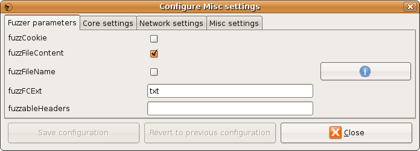
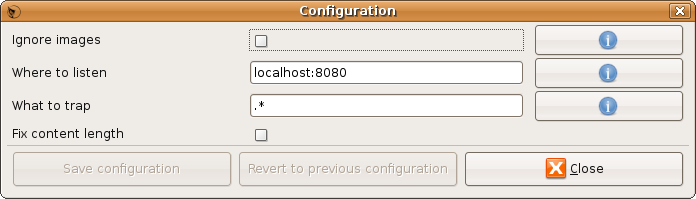

w3af gtkUi User Guide
Document version: 0.2
Original author: Facundo Batista
September, 2008
Table of Contents
1.Introduction 3
1.1.Just the graphical interface 3
1.2.Running the program 3
2.General structure 3
2.1.The toolbar 4
3.Scanning 5
3.1.Configuring the scan 5
3.2.Using the Profiles 7
3.3.Running the scan 8
4.Analyzing the results 10
4.1.Browsing the Knowledge Base 10
4.2.Site structure 12
4.3.Requests and Responses 12
5.Exploitation 13
5.1.Executing an exploit 14
5.2.Using a shell 16
6.Other tools 16
6.1.Manual Requests 16
6.2.Fuzzy Requests 17
6.3.Encode and Decode 19
6.4.Comparing HTTP traffic 21
6.5.Using the Proxy 21
7.Configurations 23
7.1.HTTP Configuration 23
7.2.Miscellaneous Configuration 24
7.3.Advanced target 26
7.4.Proxy Configuration 26
This document is a user guide for the 1.0 version of the Web Application Attack and Audit Framework ( w3af ), its goal is to provide a basic overview of how to use the application, how it works, and what you can do with it.
w3af is a complete environment for auditing and attacking web applications. This environment provides a solid platform for auditing and penetration-testing.
The w3af is a framework that you can use in different ways. This document explains how to use it through the GTK Graphic User Interface, but you can also use w3af from command line, and even new user interfaces could be implemented in the future.
In any case, w3af is a core independent of the user interface, and it will be referred as the Core throughout this documentation. It's implemented in pure Python, as this graphic user interface.
You can execute this program just doing double click in the icon, or selecting it from you operating system menu after installing it.
You can also run it from command line calling to the w3af_gui executable, and in this case you'll see any debug or warning message appear in the terminal. If you need to submit a bug or ask for a new feature, use this way to execute the program, because it'll provide useful information about the Python and PyGTK versions.
In this section is explained the general structure of the w3af Interface.
The following is the main window, the first image that you'll see from the system after it's completely loaded (during the load you'll see a splash image that gives you information about how the system is loading):

In the image you can see different sections. On top, as usual there's the menu [1] and the toolbar [2]. The body of the window is separated in different notebook tabs [3]. At the bottom of the window you have the the toolbar [4] and an indicator about the found elements [5].
In the notebook tab that you can see at the program beginning, there are three vertical panes: the profiles [6], the plugin selector [7], and the plugin configuration area [8] (where so far you see the w3af icon because you didn't select any plugin yet). Above them you also have the target URL [9].
The toolbar is separated in different functional groupings.
The first button opens the Point and Click Penetration Test, that is a Wizard that allows you to create profiles in an easy way, without having specific security related knowledge.

The second and third buttons, New and Save, operate on the Profiles. New will create a new Profile, and for this the system will ask you the profile name and a description, be creative! If you change a profile, you also can save the modifications it to disk, using the second button.

The third and fourth buttons, Play and Pause, control the state of the working Core. These buttons are mutable, as change over time, look the next section (Running the scan) for a deeper explanation of how these buttons behave.

The sixth button is to trigger Multiple Exploits. It will be enabled only in the Exploits window, check that part of the documentation for a more detailed information about this.
The rest of the buttons are to open and use different tools:

Check the Other Tools section of the documentation for an explanation of this different tools.
Finally, at the very right, there's a throbber that shows when the Core is working or not.
In this section is explained the different steps to configure, start and supervise a security scanning over a web site.
To scan the web sites in different ways there are different plugins that can be configured in different ways.
In the second column of the main window you can select which plugins to configure. This plugins are separated in two big sections, as you can see in the following picture.
The first section has all the scan plugins, in the upper part of the column [1]. There you have the different plugins grouped regarding the scan type. They are separated in:
audit
bruteforce
discovery
evasion
grep
mangle
In the lower part of the column [2] there are the output plugins. As this is the GTK user interface, the gtkOutput plugin is always enabled, but note that you can enable here the console plugin to see all the information in the standard output, and also have plugins to send all that information to a file in different formats.
If you select on any plugin you will see in the right pane [3] some information of that plugin. If that plugin is configurable (something that you can know in advance, because the plugin has an editable icon in the plugin trees [1] & [2].
To configure the plugin, just select it, and modify the options that appears on in the right pane [3]. Note that you need to Save the configuration to use it. You can see easily if any plugin is modified and not saved because its name will be in bold font.
Even if you configure a plugin, to actually use it during a scan, you need to check it. You have, at the right of each plugin, a check box that you need to select to use that plugin during the scan. If you click on the group check box, all the plugins in that group will be selected and deselected. If some plugins in that group are selected, and others are not, you'll see the group's check box in an intermediary state (as you can see in [2] for output).
If you make right-click over a plugin (or select Edit Plugin in the Edit menu), a text editor will open and you'll be able to actually edit the plugin source code.
To finish configuration the scan, you need to insert a target URL in the upper text entry. When everything is ready to run, you will note that the Play buttons are automatically enabled.
In the profiles you can save different configurations. You can think a Profile as the collection of configured plugins and target URL.
In the column of the left [1] you can see which plugins do you have:

In this example, I selected a test plugin. In the moment I select it, the plugins and the target URL are all reconfigured [2]. Also, in the pane at the right, you can see a description of that plugin [3].
See, as now we have all the information needed to start the scan, that the Start buttons [4] are enabled. Note, however, that is possible that in the profile there was no saved URL, so the target URL will remain empty (you'll find it with a “Insert the target URL here” message).
In the Profiles menu,or doing right-click over any profile, you can see different actions that you can apply over the plugins:
Save: Save the actual configuration to the profile. This will be enabled only if you changed some of the profile configuration.
Save as: Save configuration a new profile, without affecting the one selected so far. If you click on this option, you will need to enter a new profile name and description.
Revert: Discard the actual configuration and reload the one that is saved in the profile.
Delete: Delete this profile
To create a new profile, you have the New button in the toolbar, and also the New option in the Profiles menu. To create a new profile, you will need to enter a name and descriptions. After creating the new profile, you'll be able to configure to your needs. Remember that you can always create a new profile using the Point and Click Penetration test tool, with the Wizard button at the toolbar's left.
To actually run the scan some conditions need to be met: at least one plugin needs to be activated, and a target URL must be set. You'll notice that everything is OK to go, because the Start button will be enabled.

The whole scan process is controlled with two buttons that you can find in the toolbar. The first button is the Start one. When you click on it, the scan will start running, and you will see the throbber spinning. After the process starts, it can be stopped anytime, or you can let it go until the end, and it will finish automatically. To stop the process you can use the same button, note that it mutated and now it is called Stop: if you click on it you will see that it gets disabled, and there's some delay until the process is effectively stopped, you can check it because the throbber stopped spinning. When the scan is stopped, you can study the results all that you want, but if you want to start another scan you will need to clear the current results and start over. For this, you'll use again the same button as before, but note that it is called Clear now.

The second button to control the process is the Pause one. It will be enabled only when the process is running, and if you click on it, it will be pressed down (and the process paused) until you click on it again. Note that if you pause the process you can not cancel it until you restart it.
When the scanning process is started, the system will switch automatically to the Log tab. In this tab you can see how the scan evolves through the different indicators.
This tab has two main sections. In the upper part you have the logging text, where you can see all the information generated by the system. In the principal section of that part [1] you can see all the messages generated by the system, from the first one to the last generated. As this log is normally a large quantity of text, you can enable and disable the different type of messages, using the checkboxes in the log bar [4]. Note that these different types have different colors in the text itself. In the same bar you have a Search button, which enables the search functionality (explained in detail below).
Also, below that messages you can see exactly what the system is currently doing, through a single line message [2].

In the lower part of the window you can see a graph that represents what is going on with the scanning process in a visual way. In the x axis you can see the time (automatically rescaled), and in the y axis you can find three indicators: a grey bar which height indicates the quantity of debug messages at that time, a blue dot if there're information messages, and a vertical red bar with the quantity of vulnerabilities found there.
All this information is updated in real time. For a better visual following of the process, you also have, at the right of the toolbar, three indicators showing the quantity of information items found, of vulnerabilities found, and the shell which were successfully exploited (you'll find more information about this Shells in the Exploit section of this document).
Sometimes the log information is too much, even if you can separate it in the different message types, so there's a search functionality to help you. You can open the search bar using the previously mentioned button, or pressing CTRL-F when the log text window is in focus.
When the search bar opens, you'll see a text entry where you can write what you want to find, a Next and Previous buttons, and a Match case checkbox:
The system will find what you write in the text entry in real time, taking the letter case in consideration if the Match case checkbox is selected. If the inserted text doesn't match with anything in the whole text, the entry background will turn red.
Also in real time the matching text will be highlighted in yellow. If you hit the Next or Previous buttons, the system will walk the matching texts.
You can explore and analyze the scanning results after the scan process is completed (or before it's finished, because the system let's you work concurrently with that process). In this section I'll explain the different windows you have to work with the results.
There's a complete tab for results in w3af, and as there're a lot of information to analyze, this tab is also divided in tabs, as you can check the Knowledge Base, see the site structure, or navigate through the individual requests and responses.
The Knowledge Base is a collection of discovered items, that can be classified in Vulnerabilities, Informations, and other stuff. The KB Browser tab lets you dive into this information.
In the left part of the window [1] you'll find the information of the Knowledge Base. By default it only shows you the vulnerabilities and informations, but you can enable also the miscellaneous stuff or hide any of them, using the checkboxes above the info [2].
The information is grouped in a tree way, but you have different nodes to expand. If you select one of the items, and that item corresponds to a HTTP request originated by the scanning, you will see in the right part of the window all the information about that request and its response (more info about this below).
The items in the tree has a color that indicates the severity of the issue: black for informations, orange for low-severity vulnerabilities, and red for medium or high severity ones. As they're in a tree structure, each node in the tree will have the color of the more severe of its children.

As said above, when you click on a tree node that actually is generated by a HTTP request, you can see in the left part of the window information about this request and its response. This part is separated in different panes.
Above everything [3] you have general information about when the request was found (actually, this is the same line that you can find in the logs regarding this request). Below that info you have the request headers [4], the request body [5], the response headers [6], and the response body [7].
At the bottom [8] you have some buttons that will enable you to make some actions with the request and response. With the buttons at the left you can send the HTTP Request to the Manual and Fuzzy Request tools. With the button at the right you can send everything to the Compare tool. These buttons refer to the same tools that have the same icon in the toolbar, but actually send the shown information to that tools, which is very handy.
This structure, the HTTP request and response with both panes each, and the buttons to use that information with other tools, is repeated all over the program interface, so it's good to get used to it.
The URLs tab shows the structure of the site that the system worked on. It's separated In two parts, but both parts show actually the same information, although they show it in different ways.

At the left [1] you can see the site structure in the old fashion way: with a tree-like list of nodes.
At the right [2] you have the same information but graphically. Above the drawing [3] you have different buttons that help you to see the graph better: zoom in, zoom out, fit all the graph in the window, and show the graph in the original size.
In this window you will be able to search for any request (and the associated response) that the system had generated during the scanning.

In the upper text entry [1] you can insert a query to search the knowledge database for requests and responses. You have a flexible syntax to build your query, for details about the syntax, click on the Help button on the right, and a similar window to the one shown here will be presented to you.
After you enter the query, and hit the Find button, the system will retrieve all the requests and responses that match, and will present them to you in the results list [2]. If you click on any of those results, you'll see the request and response details [3].

As usual when seeing requests and responses, you'll have the tool buttons [4] to use these data in the already familiar tools.
In this section I'll explain you how to exploit the vulnerabilities found.
When the scan is running or after the scan finished running, as you can check the results, you also can start with the exploitation. For this, go to the fourth tab in the system, called Exploit:

This window is separated in different panes. At the very left [1] you have a list of all the exploits that you can execute over the vulnerabilities that you found, which are listed in the second column [2]. You can see there that we found three vulnerabilities, as you can also check in the left bottom corner of the window [3].
At the right part of the window, there're two panes: one [4] for the exploited shells (more on this below), and one [5] for the proxies (this functionality is not yet developed).
Finally, you can see that when you enter to this tab, the Multiple Exploit button in the toolbar [6] is enabled.
Exploits act on vulnerabilities. But not all exploits act on every vulnerabilities. It is well known if any exploit could act on some vulnerability, though, but to be sure and actually exploit it some verification needs to be done. Fortunately, the system easies very much this process to you.
To exploit a vulnerability, you need to drag the exploit and drop it on the vulnerability you want to exploit. This drag & drop process is all you need to activate one specific exploit; if you want multiple exploiting see below. But, as all exploits don't act on all vulnerabilities, how do you know what to drag and drop where?
When you click on any exploit, the system will put in bold font those vulnerabilities that could be exploited by that exploit [1]. This works also in the other way: if you click on any vulnerability, the system will put in bold those exploits that could act on that vulnerability [2]. I put emphasis on the “could”, because there's no certainty that the match will be useful... but for sure, if you trigger an exploit over a vulnerability that don't have both fonts in bold, it will not act.

On the other hand, if you actually drag a marked exploit on a marked vulnerability, the system will try to exploit it. A new window will pop up [3], showing the actions that the system is taken. See in the example that the system first checks the suitability of that exploit over that vulnerability, and if OK, it actually triggers the exploit.

In the example, everything is fine and the exploit succeeds, creating a Shell in the shell window [4].
If you want to trigger more than one exploit at once, you should click on the Multiple Exploit button in the toolbar, and a window like the one here at the right will appear. There you can select all the exploits that you want to trigger, and when you click on the Execute button, the system will try all the marked exploits on all the possible vulnerabilities. If you activate the First successful checkbox, the system will stop after the first time that an exploit succeeds when working on any vulnerability.

If the vulnerability generates a Shell as the result of being exploited, you will see the shell (or shells if it generates more than one) appear in a pane of this window, as we saw above.
If you double click on that shell, you will start using it, and a new window will pop up for you to use it, a window very similar to the one you see here at the right.
There you can see that you have a shell like environment. Well, it is exactly that: it is the shell opened in the remote equipment as a result of the exploited vulnerability.
Also, you have a Save button that let you save all the session to a file, in the case you want to keep all the text for a later analysis.
Apart from the w3af core functionality, that is to scan for vulnerabilities and exploit them, there are other tools that help you in the day by day work.
This tool lets you generate manual HTTP requests.

When opening the tool you will find the typical four panes window for HTTP requests and responses. In this case you'll find only active the request part [1], filled with an example request (if you opened this tool from the toolbar) or with a request that you may brought from another part of the program (using the small button under other requests, as is explained above).
You can edit the request, not only the headers part but also the body of the HTTP request, and when ready, click on the Send button [2] to issue that manually crafted request. Note that you can check the Fix length header button if you want the system to correct the Length header in the request that is sending (which lets you modify the request without fixing that header every time).
The system will issue the request and put the response (headers and body) in the right part [4].
Also you have the normal send data to tools buttons in the usual places [5].
This tool lets you create multiple manual requests in an easy and controllable way.
The part of building the HTTP request is pretty similar to the manual request, as you have also panes for the headers and the body [1], but using a special syntax you can create what is called a Fuzzy Request, which is actually a request that is expanded to multiple ones. You have a quick helper for this syntax in that very window [2], but here it is explained in detail.
When you create a request, all the text is sent as is to the destination, except those that are inside two dollar signs ($). This text is used by the system to create a text generator, that it will consumed creating the multiple requests (they're called fuzzy generators). If you don't put any double dollar signs, it will be exactly the same as if you used the Manual Request tool. If you actually want to include a dollar sign in the request, just use \$.
But if you put a text between two dollar signs that generates three items, you will actually creating three requests, and you will get three responses at the right. You can put as many fuzzy generators as you want, and the system will create multiple requests using all the possible combinations. So, if you keep the first generator (that generated three items), and insert a new one that generates, say, five items, the system will create fifteen requests (3 x 5 = 15).
The system will generate the different items using the text between the dollar signs as a Python statement, using directly eval(), with an almost clean namespace (there's only the already imported string module). There's no security mechanism in this evaluation, but there's no risks as the evaluated text is only between the dollar signs, and you're responsible about that.
Using this evaluation, for example, you could do:
Numbers from 0 to 4: $range(5)$
First ten letters: $string.lowercase[:10]$
The words spam and eggs: $['spam', 'eggs']$
The content of a file: $[l.strip() for l in file('input.txt')]$
You can actually check how many request the system will generate, using the Analyze button [3]. Just clicking on it the indicator at its right will be updated to this value. Also, if you check the Preview checkbox [4], the system will generate the different requests, and will show you them in a new pop up window.

When you're ready to actually send the generated requests, you can use the Play and Stop buttons [5], which will let you start, stop, and even pause the generated requests of being sent (the Play button will mutate to a Pause one when the system is sending the requests). Also, another indicator that the system is working is the throbber [6].
The system will show all the responses (even as they're being generated) in the classic four pane arrangement [7]: the request that was actually sent (not the fuzzy request, but one of the generated ones, with the text between the $ replaced), and the response to that specific request. Of course, the system will not show you all the requests at once, but you have a control [8] that lets you see any of the generated request/response (using the arrows, or you're even able to just enter the number that you want to see).

Beyond the standard tool buttons [9] to send the request and/or response to the Manual Request tool or the Compare tool, you have a Clear Responses button [A] that will erase all the results, and a Cluster Responses one [B] that will send all the responses to the Cluster tool (note that this tool is only accessible through here, as it only has sense to use it from multiple generated responses).
The Cluster Responses tool lets you analyze all the responses seeing graphically how different they're between themselves. The graph will show you the responses, and the distance between them, grouping for a better analysis.
Also you have different buttons that help you to see the graph better: zoom in, zoom out, fit all the graph in the window, and show the graph in the original size.
This tool allows you to apply a lot of encoding and decoding functions in the text that you want.
You have two panes where you can insert the text you want; put the text to Encode in the upper pane [1], and when encoded it will appear in the lower pane [2], and viceversa: to decode something put the text in the lower pane and after decoding it will appear in the upper pane.
To apply an encode, choose it from the encoding functions [3], and click on the Encode button. To apply a decode, choose it from the decoding functions [4], and click on the Decode button.
You have the following encoding and decoding functions:
0xFFFF Encoding: 0x encoding method
Base64 Encode / Decode: Encode and decode using Base64
Double Nibble Hex Encoding: This is based on the standard hex encoding method. Each hexadecimal nibble value is encoded using the standard hex encoding
Double Percent Hex Encoding: This is based on the normal method of hex encoding. The percent is encoded using hex encoding followed by the hexadecimal byte value to be encoded
Double URL Encode / Decode: Encode and decode doing Double URL Encode
First Nibble Hex Encoding: This is very similar to double nibble hex encoding. The difference is that only the first nibble is encoded
HTML Escape / Unescape: Encode and decode doing HTML escaping
Hex Encoding / Decoding: This is one of the RFC compliant ways for encoding a URL. It is also the simplest method of encoding a URL. The encoding method consists of escaping a hexadecimal byte value for the encoded character with a %
MD5 Hash: Encode using MD5
MS SQL Encode: Convert the text to a CHAR-like MS SQL command
Microsoft %U Encoding: This presents a different way to encode Unicode code point values up to 65535 (or two bytes). The format is simple; %U precedes 4 hexadecimal nibble values that represent the Unicode code point value
MySQL Encode: Convert the text to a CHAR-like MySQL command
Random Lowercase: Change random chars of the string to lower case
Random Uppercase: Change random chars of the string to upper case
SHA1 Hash: Encode using SHA1
Second Nibble Hex Encoding: This is very similar to double nibble hex encoding. The difference is that only the second nibble is encoded
URL Encode / Decode: Encode and decode doing URL Encode
UTF-8 Barebyte Encoding: Just a normal UTF-8 encoding
UTF-8 Encoding: Just that. Note that the hexadecimal values are shown with a %
With this tool you will be able to compare different requests and responses.
The Comparator window is separated mainly in two panes: both request and responses that you're comparing. In this tool all the information is concatenated in the same text, to ease the comparison, but you have four buttons [1] to control which part of the information appear in the text: request headers, request body, response headers, and response body.
The comparison itself is done between the request/response at the left [2], and whatever request/response you have at the right [3]. This tool is prepared to handle more than two requests/responses: you always will have one request/response at the left, and all the requests/responses that you added at the right. To see exactly what you're comparing, the system shows you each Id [4].
You have a control [5] to select which of the requests/responses that you added will compare to the one at the right. If you want to change the request/response that is at the left (the one that you compare to), you can set it using the Set text to compare button [6]. You can delete any of the requests/responses at the right using the Delete button [7], or delete them all with the Clear All one [8].
The requests can also sent from this tool to the Manual Requests or Fuzzy Requests ones, using the buttons above the texts [9]. There's also a button [A] to send all the responses at the right to the Cluster Responses tool.
This tool is a proxy that listen to a port in the machine you're running the w3af program. You can configure any program that issues HTTP request (like your internet browser, for example) to use this proxy.
When this other program issues the request, the proxy captures it and shows it to you [1]. You can choose to drop this request, using the Drop button [2], or let the request continue. If you choose the latter, you can edit the request as you want, and then click on the Send button [3].

So the system will send the request, and catch the response when arrives, and will show it to you at the right pane [4]. After analyzing the response, you can click on the Next button [5], and the system will pass the response to the other program, and prepare itself to catch the next HTTP request.
As usual when working with HTTP requests and responses you have some buttons [6] to send that information to other tools. Also you have a History pane [7] that let you search on all the requests and responses (for help about this window, check chapter 4.3 on this documentation, as it's the very same interface).
In the toolbar [8] of this window you have a Activate button that controls if the proxy is activated or not, a Trap Request button that will determine if the proxy is letting the request pass through without the procedure explained above, and a Configuration button (see chapter 7.4 for help about this configuration).
The wizard is a collection of easy questions that you need to answer, and using all this information, the system will generate a Profile for you. Easy as that.
When you click on the Wizard button in the toolbar, or choose the same option in the Help menu, a new pop up window will appear.
This first window will just let you choose which Wizard you want to run. Choose one, and click on the Run the wizard button.
After this initial window, you'll be presented all the questions that need to answer to feed the wizard. In each window you'll have a description of the needed information, one or more questions or fields to fill, and the Back and Next buttons.
You can go back and forward through all the wizard, but at the very end you'll want the Wizard to execute its magic, and generate the profile for you. For this, in the last window you'll have two fields: the name and the description of the new profile. Fill them, click on the Save button, and that's all: you have a new profile in the system.
There're different configuration panels all across the w3af system. Here all of them are explained.
This section is used to configure URL settings that affect the core and all plugins.

General configuration:
timeout: The timeout for connections to the HTTP server. Set low timeouts for LAN use and high timeouts for slow Internet connections.
headersFile: Set the headers filename. This file has additional headers that are added to each request.
Basic HTTP Authentication:
basicAuthUser: Set the basic authentication username for HTTP requests.
basicAuthPass: Set the basic authentication password for HTTP requests.
basicAuthDomain: Set the basic authentication domain for HTTP requests. This configures on which requests to send the authentication settings configured in basicAuthPass and basicAuthUser. If you are unsure, just set it to the target domain name.
Cookies:
cookieJarFile: Set the cookiejar filename. The cookiejar file must be in mozilla format.
ignoreSessCookies: Ignore session cookies. If set to True, w3af will ignore all session cookies sent by the web application.
Outgoing proxy:
proxyPort: Proxy TCP port TCP port for the remote proxy server to use. On windows systems, if you left this setting blank w3af will use the system settings that are configured in Internet Explorer.
proxyAddress: Proxy IP address IP address for the remote proxy server to use. On windows systems, if you left this setting blank w3af will use the system settings that are configured in Internet Explorer.
Misc:
userAgent: User Agent header. User Agent header to send in request.
maxFileSize: Maximum file size. Indicates the maximum file size (in bytes) that w3af will GET/POST.
maxRetrys: Maximum number of retries. Indicates the maximum number of retries when requesting an URL.
404 settings:
always404: A comma separated list that determines what URLs will ALWAYS be detected as 404 pages.
404exceptions: A comma separated list that determines what URLs will NEVER be detected as 404 pages.
autodetect404: Perform 404 page autodetection.
byDirectory404: Perform 404 page detection based on the knowledge found in the directory of the file. Only used when autoDetect404 is False.
byDirectoryAndExtension404: Perform 404 page detection based on the knowledge found in the directory of the file AND the file extension. Only used when autoDetect404 and byDirectory404 are False.
This section is used to configure misc settings that affect the core and all plugins.
Fuzzer parameters:
fuzzCookie: Indicates if w3af plugins will use cookies as a fuzzable parameter.
fuzzFileContent: Indicates if w3af plugins will send the fuzzed payload to the file forms.
fuzzFileName: Indicates if w3af plugins will send fuzzed filenames in order to find vulnerabilities. For example, if the discovered URL is http://test/filename.php, and fuzzFileName is enabled, w3af will request among other things: http://test/file'a'a'name.php in order to find SQL injections. This type of vulns are getting more common every day!
fuzzFCExt: Indicates the extension to use when fuzzing file content.
fuzzableHeaders: A list with all fuzzable header names.
Core parameters:
autoDependencies: Automatic dependency enabling for plugins. If autoDependencies is enabled, and pluginA depends on pluginB that wasn't enabled, then pluginB is automatically enabled.
maxDepth: Maximum depth of the discovery phase. For example, if set to 10, the webSpider plugin will only follow 10 link levels while spidering the site. This applies to the whole discovery phase; not only to the webSpider.
maxThreads: Maximum number of threads that the w3af process will spawn.
maxDiscoveryLoops: Maximum number of times the discovery function is called.
Network parameters:
interface: Local interface name to use when sniffing, doing reverse connections, etc.
localAddress: Local IP address to use when doing reverse connections.
Misc:
demo: Enable this when you are doing a demo in a conference.
showProgressBar: Enables or disables the progress bar that is shown by audit plugins.
nonTargets: A comma separated list of URLs that w3af should completely ignore. Sometimes it's a good idea to ignore some URLs and test them manually.
Configure target URLs.

target: A comma separated list of URLs
targetOS: Target operating system. This setting is here to enhance w3af performance.
targetFramework: Target programming framework. This setting is here to enhance w3af performance.
These are the options to configure the Proxy tool.
ignoreimgs: Ignore images by extension
ipport: IP and port where to listen
trap: REGEX that indicates what URL to trap
fixlength: Fix content length